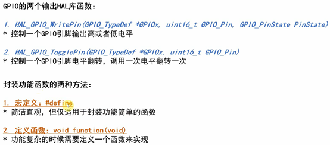

1.GPIO操作函数

2.流水灯和跑马灯的区别

3.按键消抖

4.CubeMx的硬件初始化函数

引脚初始化状态也是在cubemx里面设置好的

5. OLED显示


6. STM32F103的GPIO模式

7. 模拟I2C
// IIC发送1字节数据（字节高位先传：MSB）

8.OLED显示格式


这款oled显示，低位在前，高位在后，所以需要取字模软件


9.串行通信


对于同步信号，可以通过调整时钟的频率，可以很快地提高数据传输的频率。
对于异步信号，要提前约定好速率，不能随意更改。


sizeof()函数包含结束符
strlen()函数不包含结束符\0

单片机编程的时候，应该可以使用所有的c库，keil编译器可以调用内部的库帮我们做处理，最终还是转化为机器码。

10.中断


11.环形缓冲区


9.1 环形缓冲区状态（写满/空）理解
9.1.1 特征
满或空，读写指针会出现在同一位置
9.1.2分析
判断缓冲区是满还是空有多种方法，例如计数、保持一个存储单元为空、镜像指示位等，本文采用第二种方式：保持一个存储单元为空，缓冲区中总是有一个存储单元保持未使用状态。缓冲区最多存入（size - 1） 个数据。
* 如果读写指针指向同一位置，则缓冲区为空。
* 如果写指针位于读指针的相邻后一个位置，则缓冲区为满。
这种策略的优点是简单、鲁棒（稳定健壮）；缺点是语义上实际可存数据量与缓冲区容量不一致，测试缓冲区是否满需要做取余数计算。
因为缓冲区写满和为空的标志都是PR =pW ,所以我们需要把他们区分开来。 1.对于缓冲区为空PR =Pw，没啥问题， 2.但是对于写满的话，我们分开理解，先判断PW是否达到了BUFFER_SIZE规定的最大大小，判断是否满足最大大小，我们采用取余的方式，如果两个数字相同，那么余数为0，不过不同的话，余数就是PW，现在问题又来了，这样和判断缓冲区为空的方式是一样的，所以我们需要一个标志位来判断是否写满，也就是浪费的最后一位，下面两种情况， 这个数组长度为8，当pw到达数组边界7的时候，需要让PW=0 （1）如果PW没有达到最大尺寸7，那么正常写入，这句话前面的判断就是
，就可以写入了。PR = PW是判断缓冲区为空或者为满的必要条件，而前面是用来判断PW写入这个数据后，PW被+1后，下一位是否为8（0） （2）PW达到最大尺寸7，也就是数组下标7的位置，就是上一次写入了数组下标6，导致这次数组下标为7，那么当PW=7的时候，下一个PW就是8(即0)
注意那个+1，区别了位置0并且使得PW写到第6位的时候，准备写第7位，这时判断了这是最后的一位，所以跳过，直接判断为满。